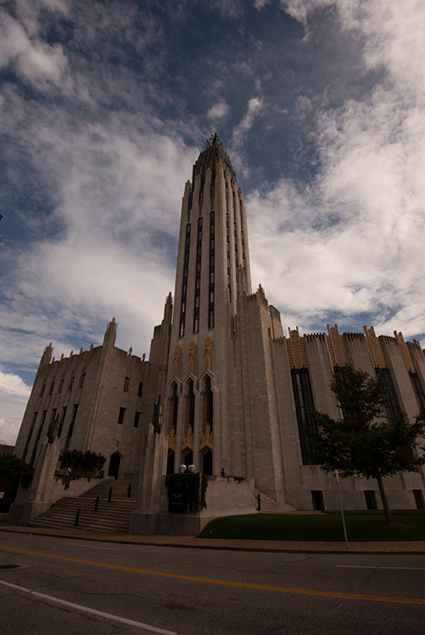
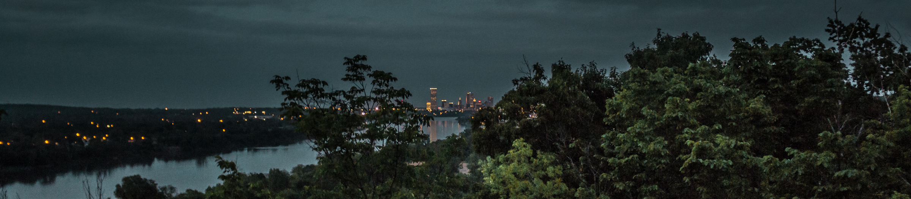
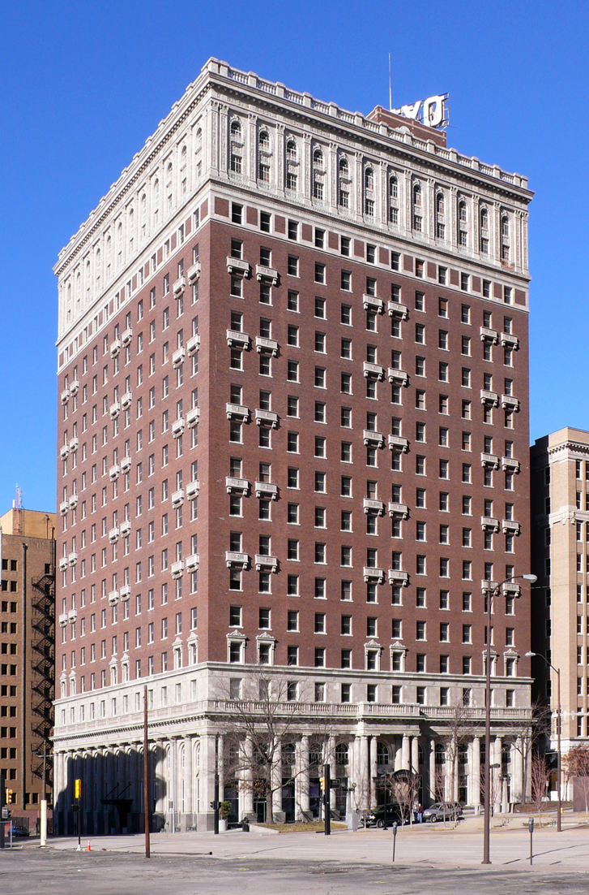
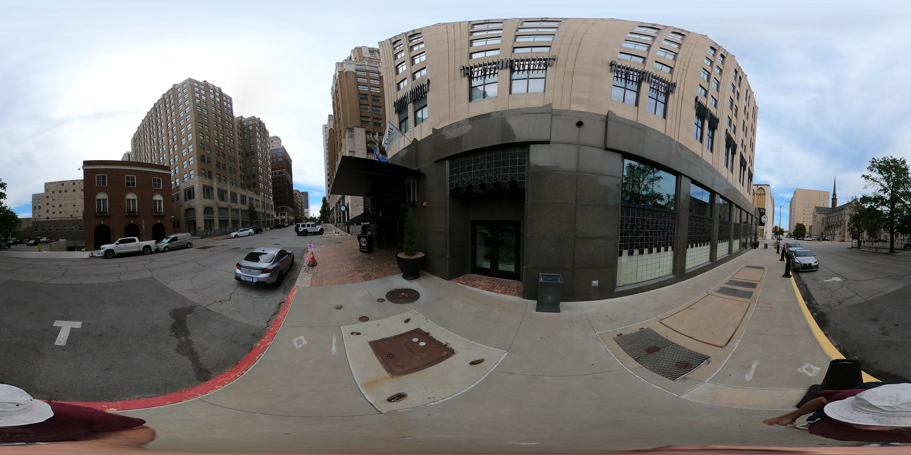

THE TULSA GAYS BLOG
Stories, guides, and insider tips for LGBTQ+ life in Tulsa.
Your First Time at Club Majestic: What to Expect (And Why Thursday Changes Everything)
July 1, 2026
Tulsa's flagship gay nightclub has two floors, a drag show every Thursday in July, and an outdoor patio downtown. Here's what to expect your first night, and exactly which night to go first.
Tulsa vs. OKC: Which Oklahoma City Has the Better Gay Scene? (We Checked.)
July 1, 2026
Oklahoma has two mid-sized cities and one question everyone is quietly asking. We compared gay bars, community organizations, Pride events, and gayborhoods. The answer is not as close as OKC would like to believe.
Your First Time at Yellow Brick Road: What to Expect (And Why You've Waited Too Long)
June 25, 2026
Tulsa's only lesbian bar is one of about thirty left in the entire United States. It burned in 2022. The community rebuilt it. It reopened June 2023 and it is better than ever. Here's what first-timers need to know before walking in.
Gay Neighborhoods in Tulsa: Where LGBTQIA+ Tulsa Actually Lives
June 24, 2026
Tulsa has three distinct LGBTQ+ neighborhoods and each one has its own personality. The Arts District has the institutions. Cherry Street has the scene. Brookside has the mortgages. Here's the real map.
Is Oklahoma Safe for LGBTQ+ Travelers? The Honest Answer
June 24, 2026
Oklahoma has passed serious anti-LGBTQ+ legislation. Here is what that actually means for travelers — and what it doesn't mean — and why Tulsa keeps showing up as one of the most surprising queer-friendly cities in the American interior.
Drag in Tulsa: Every Show, Every Night, All the Tea
June 24, 2026
Club Majestic productions. YBR drag nights. Elote's Saturday brunch institution. The Eagle on a big event night. Here is where drag actually lives in Tulsa, what each venue does differently, and how to never miss a show again.
The Gayest Brunch in Tulsa: Drag Queens, Mimosas, and Where to Go
June 17, 2026
Brunch is the one sacrament we kept. From Oklahoma's longest-running drag brunch at Elote (second Saturdays, downtown) to the morning-after diners and the queer coffee houses where Tulsa quietly keeps house. Verified addresses, times, and exactly when to show up.
Gay-Friendly Restaurants in Tulsa: The Complete Guide, Sorted by Vibe
June 17, 2026
Date night, drag brunch, big nights out, cheap casual hangs, and the queer-owned spots you should be spending money at. Every gay-friendly restaurant in Tulsa, sorted by vibe so "where should we eat" never starts a fight again.

Affirming Churches in Tulsa: Yes, They Exist (Here's Where to Find Yours)
June 10, 2026
You can be gay, trans, partnered, and entirely yourself, and walk into a Tulsa church where nobody flinches. A verified guide to the city's open and affirming congregations, with addresses, denominations, and exactly what to expect when you walk in.

Tulsa Pride 2026: When It Is, What to Expect, and Why It's in October
June 10, 2026
No, you did not miss it. Tulsa Pride moved to October, and there's a genuinely smart reason why. Here's when the festival and parade happen, what to expect, and what to do with yourself in June (Eagle Pride Fest, June 20 to 21).

LGBTQ-Friendly Hotels in Tulsa: Where to Stay Without the Side-Eye
June 3, 2026
Book the king room, hold his hand at the front desk, and watch nothing happen. An honest guide to the gay-friendly hotels in Tulsa, sorted by vibe and budget, plus the Arts District Airbnb truth and where to stay for Pride.

Gay Bars in Tulsa: The Complete Guide to LGBTQ+ Nightlife
May 7, 2026
Tulsa has three dedicated gay bars and each one is worth knowing. Club Majestic, the Tulsa Eagle, and Yellow Brick Road — here's who goes where, the best nights, and everything the Google reviews skip over.

Sleep Inside His Masterpiece: Bruce Goff, Tulsa's Gay Architect
April 29, 2026
He designed the Tulsa Club Hotel at 23. He was gay. Oklahoma forced him out for it in 1955. His buildings are still standing — here's the story, a tour map, and why you should spend the night in one.

Gay Tulsa Travel Guide: Is Tulsa LGBTQ+ Friendly? (Yes. Here's Proof.)
April 27, 2026
Your complete guide to queer Tulsa — the bars, the neighborhoods, drag shows, where to eat, where to stay, and the honest truth about what it's like to be gay in Oklahoma's best city. Spoiler: it's better than you think.

New to Tulsa? Here's Your Queer Starter Pack
April 15, 2026
Bars. Orgs. Sports leagues. Affirming churches. Monthly socials. Everything you need to plug into Tulsa's LGBTQ+ community, all in one place.

Date Night Ideas for Queer Couples in Tulsa
April 8, 2026
Stop defaulting to the bar. Tulsa has art museums, rooftop cocktails, drag shows, indie cinemas, and a park that's legitimately world-class. Here's a full guide to date nights that are worth planning around.

LGBTQ+ Sports in Tulsa: Bowling, Kickball, Softball, and More
April 8, 2026
Spring season is here and Tulsa has real gay sports leagues. Lambda bowling, HotMess kickball, Metro softball, and more. Here's where to find your team and why showing up matters more than your score.

Gilcrease UnCrease: A Free Arts Series Running All Spring (And You Really Need to Go)
April 7, 2026
Gilcrease Museum's free community arts program runs through May 2026, featuring 29 local artists across 6 dates. Live music, performances, and workshops, some by queer artists. This Saturday: Tulsa Opera, ambient soundscapes, interactive labyrinth, and violin. All free.
How We Find Every Queer Event in Tulsa (So You Don't Have To)
March 31, 2026
80+ sources. 5 tiers. Every Monday morning. Here's the algorithm that powers your weekly queer event guide, and why nothing to do in Tulsa sounds like a straight person problem.
Top 5 LGBTQ+-Friendly Things to Do in Tulsa (Beyond the Bars)
May 15, 2026
Museums, parks, bookstores, indie film — Tulsa's LGBTQ+-welcoming scene goes well past last call.
The Tulsa Couple Who Helped Win Marriage Equality for Oklahoma
May 15, 2026
Mary Bishop and Sharon Baldwin filed their lawsuit in 2004. It took eleven years. Their story belongs to Tulsa.